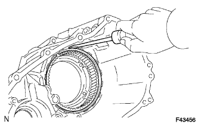
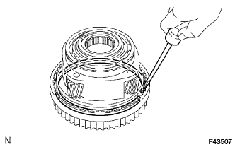
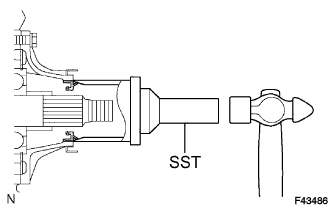

TRANSFER ASSEMBLY > REASSEMBLY |
| 1. INSTALL TRANSFER LOW PLANETARY RING GEAR |
Install the low planetary ring gear to the front transfer case.
|  |
Using a screwdriver, install the snap ring.
| 2. INSTALL PIN |
Install the pin.
| 3. INSTALL COMPRESSION SPRING |
Install the spring.
| 4. INSTALL TRANSFER CASE PLUG |
Install the transfer case plug.
| 5. INSTALL TRANSFER OUTPUT SHAFT PLATE WASHER |
Install the washer.
| 6. INSTALL TRANSFER DRIVE SPROCKET BEARING |
Install the bearing.
| 7. INSTALL TRANSFER DRIVE SPROCKET SUB-ASSEMBLY |
Install the transfer drive sprocket.
| 8. INSTALL NO. 1 TRANSFER OUTPUT SHAFT SPACER |
Install the output shaft spacer.
| 9. INSTALL REAR TRANSFER OUTPUT SHAFT RADIAL BALL BEARING |
Using SST and a press, install a new bearing.
| *1 | Groove |
 | Rear |
| 10. INSTALL TRANSFER OUTPUT SHAFT PLATE WASHER |
 |
Install the washer.
| 11. INSTALL TRANSFER OUTPUT SHAFT FRONT NEEDLE ROLLER BEARING |
Install the needle roller bearing.
| 12. INSTALL TRANSFER CLUTCH HUB |
Install the transfer clutch hub.
| 13. INSTALL CENTER DIFFERENTIAL CASE |
 |
Install the center differential case.
| 14. INSTALL TRANSFER OUTPUT SHAFT SPACER BALL |
Install the ball.
| 15. INSTALL NO. 2 TRANSFER OUTPUT SHAFT SPACER |
Install the spacer.
Using a snap ring expander, install the snap ring.
| 16. INSPECT DRIVE SPROCKET RADIAL CLEARANCE |
Using a dial indicator, measure the radial clearance of the drive sprocket.
| 17. INSPECT DRIVE SPROCKET THRUST CLEARANCE |
 |
Using a feeler gauge, measure the thrust clearance of the drive sprocket.
| 18. INSTALL TRANSFER INPUT SHAFT BEARING |
Using SST and a press, install a new bearing with the groove facing forward.
| 19. INSTALL TRANSFER INPUT BEARING SHAFT SNAP RING |
 |
Select a new snap ring that allows minimal axial play.
| Mark | Specified Condition |
| 1 | 1.45 to 1.50 mm (0.0571 to 0.0591 in.) |
| 2 | 1.50 to 1.55 mm (0.0591 to 0.0610 in.) |
| 3 | 1.55 to 1.60 mm (0.0610 to 0.0630 in.) |
| 4 | 1.60 to 1.65 mm (0.0630 to 0.0650 in.) |
| 5 | 1.65 to 1.70 mm (0.0650 to 0.0669 in.) |
Using a snap ring expander, install the snap ring.
| 20. INSTALL TRANSFER LOW PLANETARY GEAR SPLINE PIECE |
|  |
Using a screwdriver, install the low planetary gear spline piece and snap ring.
| 21. INSTALL TRANSFER LOW PLANETARY GEAR BEARING |
Using SST and a press, press in a new low planetary gear bearing.
| 22. INSTALL NO. 1 TRANSFER INPUT SHAFT SEAL RING |
 |
Apply gear oil to 2 new seal rings.
Install the 2 seal rings to the input shaft.
| 23. INSTALL TRANSFER LOW PLANETARY GEAR THRUST BEARING |
 |
Install the bearing.
| Front |
| 24. INSTALL NO. 1 TRANSFER THRUST BEARING RACE |
Install the thrust bearing race.
| 25. INSTALL TRANSFER INPUT SHAFT |
Install the transfer input shaft.
| 26. INSTALL MANUAL TRANSFER PLANETARY CARRIER WASHER |
 |
Install the washer.
| 27. INSTALL TRANSFER INPUT GEAR STOPPER BALL |
Install the ball.
| 28. INSTALL TRANSFER INPUT GEAR STOPPER |
Install the input gear stopper.
| 29. INSTALL TRANSFER INPUT GEAR STOPPER SHAFT SNAP RING |
Select a new input gear stopper shaft snap ring that allows 0.05 to 0.15 mm (0.00197 to 0.00590 in.) of axial play.
| Mark | Specified Condition |
| A | 2.10 to 2.15 mm (0.0827 to 0.0846 in.) |
| B | 2.15 to 2.20 mm (0.0846 to 0.0866 in.) |
| C | 2.20 to 2.25 mm (0.0866 to 0.0886 in.) |
| D | 2.25 to 2.30 mm (0.0886 to 0.0906 in.) |
| E | 2.30 to 2.35 mm (0.0906 to 0.0925 in.) |
| F | 2.35 to 2.40 mm (0.0925 to 0.0945 in.) |
| G | 2.40 to 2.45 mm (0.0945 to 0.0965 in.) |
| H | 2.45 to 2.50 mm (0.0965 to 0.0984 in.) |
| J | 2.50 to 2.55 mm (0.0984 to 0.100 in.) |
| K | 2.55 to 2.60 mm (0.100 to 0.102 in.) |
| L | 2.60 to 2.65 mm (0.102 to 0.104 in.) |
| M | 2.65 to 2.70 mm (0.104 to 0.106 in.) |
| N | 2.70 to 2.75 mm (0.106 to 0.108 in.) |
| P | 2.75 to 2.80 mm (0.108 to 0.110 in.) |
| Q | 2.80 to 2.85 mm (0.110 to 0.112 in.) |
| R | 2.85 to 2.90 mm (0.112 to 0.114 in.) |
| S | 2.90 to 2.95 mm (0.114 to 0.116 in.) |
| T | 2.95 to 3.00 mm (0.116 to 0.118 in.) |
| U | 3.00 to 3.05 mm (0.118 to 0.120 in.) |
Using a snap ring expander, install the snap ring.
| 30. INSTALL LOW PLANETARY GEAR ASSEMBLY WITH TRANSFER INPUT SHAFT SUB-ASSEMBLY |
 |
Install the low planetary gear together with the input shaft.
Using a snap ring expander, install the shaft snap ring.
| 31. INSTALL TRANSFER OIL PUMP GEAR |
 |
Install the transfer oil pump gear.
| 32. INSTALL TRANSFER OIL PUMP BODY O-RING |
 |
Coat a new O-ring with gear oil and install it to the oil pump body.
| 33. INSTALL TRANSFER OIL PUMP BODY SUB-ASSEMBLY |
Install the oil pump body with the 3 bolts.
| 34. INSTALL TRANSFER CASE MAGNET |
| 35. INSTALL TRANSFER OIL SEPARATOR SUB-ASSEMBLY |
Install the oil separator with the 3 bolts.
| 36. INSTALL FILLER PLUG |
Install a new gasket and the filler plug.
| 37. INSTALL DRAIN PLUG |
Install a new gasket and the drain plug.
| 38. INSTALL TRANSFER SHIFT ACTUATOR ASSEMBLY |
 |
Install the shift actuator with the 3 bolts.
Using a screwdriver and hammer, tap on the 2 snap rings.
| 39. INSTALL TRANSFER INPUT GEAR RADIAL BALL BEARING |
 |
Using SST and a press, install a new input gear radial ball bearing.
| 40. INSTALL TRANSFER DRIVEN SPROCKET BEARING |
Using SST and a press, install a new driven sprocket bearing.
| 41. INSTALL REAR OUTPUT SHAFT SUB-ASSEMBLY, FRONT DRIVE CHAIN AND DRIVEN SPROCKET SUB-ASSEMBLY |
Install the rear output shaft and driven sprocket to the front drive chain.
Install the rear output shaft, front drive chain and driven sprocket to the rear transfer case.
Using a snap ring expander, install the snap ring.
| 42. INSTALL CENTER DIFFERENTIAL LOCK FORK SUB-ASSEMBLY WITH FRONT DRIVE CLUTCH SLEEVE |
Install the center differential lock fork and front drive clutch sleeve.
| Front |
Install the bolt.
Using a screwdriver and hammer, drive in the snap ring.
| 43. INSTALL NO. 2 TRANSFER GEAR SHIFT FORK SUB-ASSEMBLY WITH TRANSFER HIGH AND LOW CLUTCH SLEEVE |
Install the No. 2 gear shift fork and high and low clutch sleeve.
| Front |
Install the bolt.
| 44. INSTALL TRANSFER OUTPUT SHAFT FRONT NEEDLE ROLLER BEARING |
Install the needle roller bearing to the input shaft.
| 45. INSTALL TRANSFER OUTPUT SHAFT SPACER |
Install the transfer output shaft spacer to the input shaft.
| 46. INSTALL REAR TRANSFER CASE |
 |
Apply seal packing to the rear transfer case as shown in the illustration.
| *1 | Seal Packing |
Install the clamp and rear transfer case with the 12 bolts.
| 47. INSTALL COLLAR |
 |
Install the collar.
| 48. INSTALL TRANSFER OUTPUT SHAFT WASHER |
Install the 2 washers.
| 49. INSTALL TRANSFER EXTENSION HOUSING SUB-ASSEMBLY |
 |
Apply seal packing to the extension housing as shown in the illustration.
| *1 | Seal Packing |
Apply adhesive to the threads of the bolts.
Install the extension housing with the 5 bolts.
| 50. INSTALL TRANSFER CASE REAR OIL SEAL |
|  |
Coat the lip of a new oil seal with MP grease.
Using SST and a hammer, tap in the oil seal until its surface is flush with the case upper surface.
| 51. INSTALL REAR TRANSFER OUTPUT SHAFT COMPANION FLANGE OIL SEAL |
 |
Using SST and a hammer, tap in a new oil seal.
Coat the lip of the oil seal with MP grease.
| 52. INSTALL REAR OUTPUT SHAFT COMPANION FLANGE SUB-ASSEMBLY |
 |
Apply gear oil to the connecting areas of the companion flange and output shaft.
Install the companion flange to the output shaft.
| Rear |
Using SST to hold the companion flange, install a new lock nut.
 |
Using a chisel and hammer, stake the lock nut.
| *a | CORRECT |
| *b | INCORRECT |
| 53. INSTALL TRANSFER CASE FRONT OIL SEAL |
Coat the lip of a new oil seal with MP grease.
Using SST and a hammer, tap in the oil seal until its metal ring contacts the case.
| 54. INSTALL FRONT TRANSFER OUTPUT SHAFT COMPANION FLANGE OIL SEAL |
|
Using SST and a hammer, tap in a new oil seal.
Coat the lip of the oil seal with MP grease.
| 55. INSTALL FRONT OUTPUT SHAFT COMPANION FLANGE SUB-ASSEMBLY |
Apply gear oil to the connecting areas of the companion flange and driven sprocket.
Install the companion flange to the driven sprocket.
| Front |
Using SST to hold the companion flange, install a new lock nut.
|
Using a chisel and hammer, stake the lock nut.
| *a | CORRECT |
| *b | INCORRECT |
| 56. INSTALL BREATHER OIL DEFLECTOR |
Install the oil deflector.
| 57. INSTALL TRANSFER CASE COVER SUB-ASSEMBLY |
Install the case cover with the 4 bolts.
| 58. INSTALL TRANSFER RH BEARING RETAINER OIL SEAL |
Using SST and a hammer, tap in a new oil seal until its surface is flush with the retainer upper surface.
Coat the lip of the oil seal with MP grease.
| 59. INSTALL TRANSFER RH BEARING RETAINER SUB-ASSEMBLY |
Apply seal packing to the bearing retainer as shown in the illustration.
| *1 | Seal Packing |
Apply sealant to the bolt threads.
 |
Install the retainer with the 5 bolts.
| 60. INSTALL HOSE |
 |
Attach the clamp and install the hose.